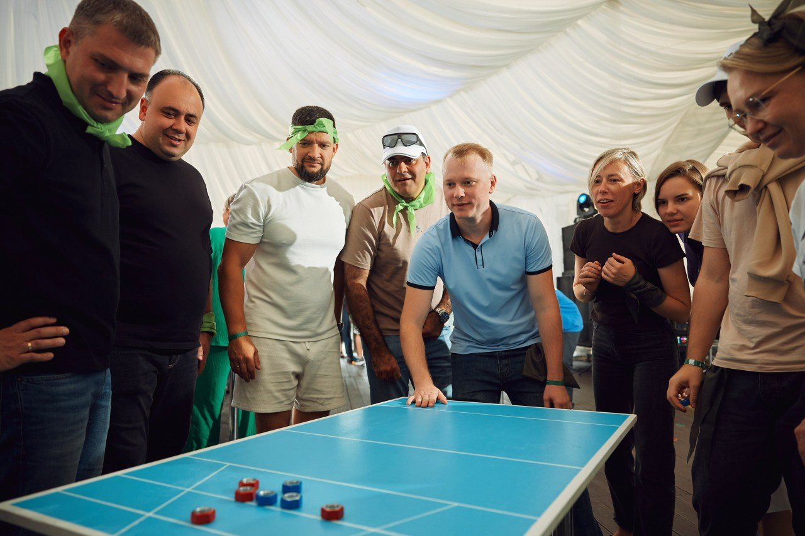
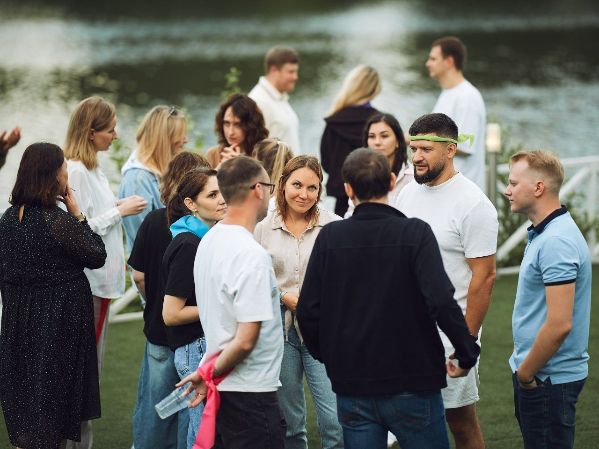
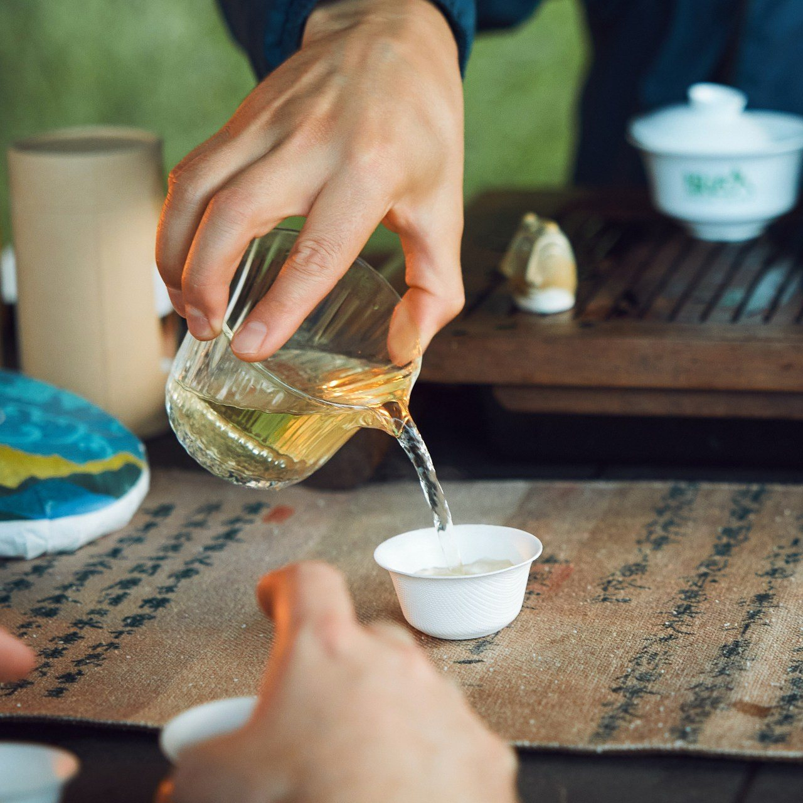
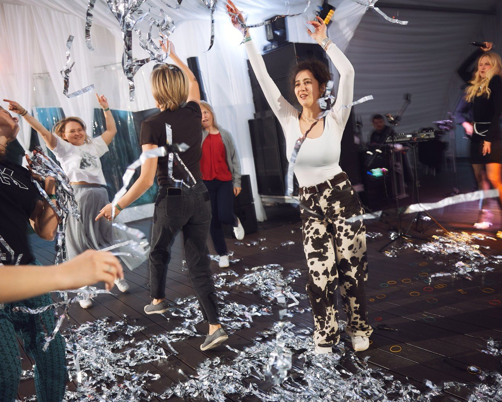

Case / international bank / summer 2026
Offsite for an international bank team
A two-day offsite for 50 people from an international bank's management team. We were not designing a heavy strategy session: the task was to create a strong shared experience, help people exhale after an intense period, feel unity, and get to know each other beyond their working roles.
Planning a similar offsite? Tell us what your team needs, and we will shape the right format.
Discuss your projectContext
The real request was a shift in state: the team did not need another working event outside the office, but a space to switch context, engage without pressure, and feel live contact again. The program followed a simple, precise rhythm: calm arrival, a short shared opening, Olympic-style games, and an evening with music, a tea zone, and time for conversation.




Result
It was 10 out of 10.
The result was not a formal team-building checkbox, but a visible shift in the room: people mixed, laughed, stayed after the official part, and left with a warm shared memory.
Discuss a similar offsite